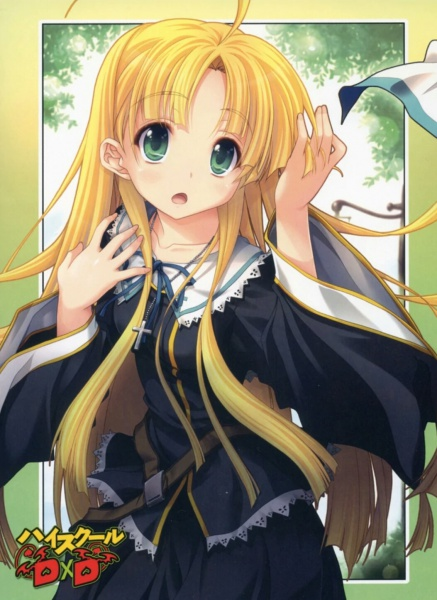
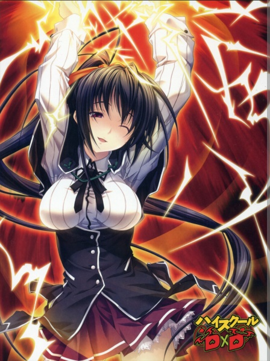

Život 2
Počinjem kao vrag
Deo 1
“Uooooooooooooooo!”
Ponoć je i vrtim pedale bicikla punom brzinom.
Razlog je jednostavan.
Delim letke. Na njima se nalazi magični krug koji je lak za upotrebu.
Kada ljudi sa jakom pohlepom uzmu ove letke u ruke i požele ono što žele, onda ćemo mi, Đavoli, biti prizvani pred njih.
Onda pogledam prenosivi uređaj u svojoj ruci. Monitor prikazuje mapu grada u kome se trenutno nalazim i na njoj trepere crvena svetla.
Krenuo sam ka tim oblastima vrteći pedale bicikla.
Kada stignem do tačke koja treperi, a to je kuća koja pripada nekome, ubacujem letak u njihovo poštansko sanduče.
Onda se krećem ka ostalim tačkama koje trepere u blizini.
Nastavljam da ponavljam ovaj postupak.
Iznova i iznova.
“Jeboteeeeeeeee! Ne može se pomoći! Ne može se pomoći! Na kraju krajeva, ja sam Đavo!”
Vrtim pedale bicikla dok vrištim naglas.
Razmišljam o danu kada sam saznao da sam Đavo.
Dan kada sam saznao da sam posednik Svete Opreme, kada sam saznao da je Juma-čan Pali Anđeo, i kada sam saznao da je Rias-senpai Đavo.
Usput, moja đavolska krila su nestala odmah nakon toga. Na kraju krajeva, ona su nešto što će postati prepreka mom svakodnevnom životu. Navodno, krila se mogu koristiti za letenje ako se naviknem na njih. Osećaj imati krila je zaista odvratan......
Bilo je to pomalo šokantno iskustvo imati krila koja mi rastu iz leđa.
“Ako budeš radio pod mojom komandom, tvoj novi život bi mogao postati veoma sjajan, znaš?”
Rias-senpai mi to govori namigujući mi dok ja gledam dole nakon što sam saznao da sam Đavo. Navodno, u zamenu za to što me je Rias-senpai reinkarnirala kao Đavola, moram da nastavim da živim kao njen sluga.
Izgleda da je tako.
Oni koji se reinkarniraju kao Đavoli od ljudi moraju postati sluge Đavola koji ih je reinkarnirao. Više kao, ovo je pravilo Đavola.
Šta? Ja sam njen sluga......? Možda i nije tako loše postati sluga lepotice, ali ipak, ne mogu da se složim sa tim.
“Ali znaš, postoje rangovi među Đavolima. To se zove plemstvo. I ja ga imam. Mesto tvog rođenja i tvoje porodično poreklo igraju veliku ulogu u tome, ali postoje i Đavoli koji su se uzdigli. Svi počinju kao početnici prvo.”
“Možeš li molim te da prestaneš da pričaš kao da je ovo reklama za regrutaciju!?
Ali da li si ozbiljna? Još uvek ne mogu da verujem.”
Senpai počinje da mi šapuće na uvo dok se ja žalim.
Njena grimizna kosa tako lepo miriše. Osećam se kao da će mi mozak paralizovati. O, da li je i ovo demonska moć?
“Usput, možda ćeš moći da započneš život u kome možeš postati popularan kod devojaka, znaš?”
—!
Te reči su počele da mi se vrte po glavi.
“Kako!?”
Reči su mi izletele iz usta pre nego što sam pokušao da razmislim o tome.
Moja perverzna utroba, prilično je neverovatno ako je ovako loše.
Čekaj, ovo možda jeste delo demonske moći koju je Senpai bacila na mene. Čak i ja mislim da imam veći napon nego obično.
“Većina čistokrvnih Đavola je ubijena u ratu koji se dogodio davno. Zbog toga su Đavoli počeli očajnički da sakupljaju sluge. Pa, Đavoli nemaju snagu ili uticaj koji su prvobitno imali kada su vodili svoje vojske. Čak i tako, moramo da nastavimo da povećavamo broj Đavola. Baš kao i ljudi, Đavoli se dele na muški i ženski rod i sposobni su da rađaju. Ali čak i uz normalno rođenje, biće potrebno mnogo vremena da se vratimo na istu populaciju kao ranije. Na kraju krajeva, Đavoli imaju veoma nisku stopu nataliteta. Onda nećemo moći da se suprotstavimo Palim Anđelima. Zato pronalazimo ljude koji izgledaju kao da imaju potencijala i pretvaramo ih u Đavole. Kao naše sluge, to jest.”
“Dakle, ja sam sluga na kraju krajeva.”
“O, nemoj da praviš takvo lice. Sada ću preći na stvar. Pošto ovo samo povećava broj sluga, ne povećava broj moćnih Đavola. Zato su Đavoli odlučili da daju šansu za moć reinkarniranim Đavolima—onima koji su reinkarnirani od čoveka. Odlučili su da daju plemstvo i reinkarniranim Đavolima, sve dok su moćni. Zbog toga ima mnogo Đavola u ljudskom društvu. Takođe ima i brojeva Đavola poput mene koji su takođe došli u ljudsko društvo. Ise, iako to nisi shvatio, siguran sam da si prošao pored nekih Đavola u ovom gradu.”
“Đavoli su onda uvek bili u blizini!?”
“Da. Mada postoje ljudi koji mogu da razlikuju ko su Đavoli, a ko ne. Osoba sa jakom pohlepom ili osoba koja želi pomoć od Đavola obično može snažno da nas razlikuje. Obično nas prizivaju oni koji mogu da nas razlikuju, kroz letak sa magičnim krugom koji delimo. Postoje ljudi poput tebe, Ise, koji mogu da razlikuju Đavole, ali ne veruju u naše postojanje, ali većina njih obično poveruje ako vide naše demonske moći.”
Šta!? Znači razlog zašto sam prizvao Senpai je zato što sam imao jaku pohlepu!
Izgleda da ima promena i u društvu Đavola!
To mora da je teška stvar, ali to sada nije bitno.
Važno je da i za mene postoji šansa!
“O-Onda! To znači da i ja mogu da dobijem plemstvo sa načinom na koji radim stvari!?”
“Da. Nije nemoguće. Naravno, bilo bi potrebno mnogo vremena i truda da se to postigne.”
“Uoooooooooooooooooooooooooh!!”
Vičem. Unutar ove klupske prostorije.
“Da li si ozbiljna!? Ja!? Ja mogu da napravim svoj harem!? J-Ja mogu da imam seks sa njima takođe, zar ne!?”
“Da. Mislim da je u redu ako je sa tvojim slugama.”
Grom udara u moje telo.
Nemoguće.
Nešto tako je zaista moguće!?
U stvarnom svetu i takođe kao čovek, zaista je teško izgraditi svoj harem.
Nema šanse da možeš da sakupiš gomile devojaka ako si samo običan čovek.
To je zato što je situacija u kojoj se trenutno nalazim loša.
Nemam čak ni jednu devojku. Pa, imao sam, ali me je ubila moja bivša devojka.
Sada je drugačije! Sada mogu......!
“Uooooooooooooooooooooooooooooooooooooooooh!! Biti Đavo je super! Pakao da! Ne mogu više da se smirim! Verovatno mogu da bacim svoj porno časopis koji tajno krijem—”
Prestajem sa onim što sam hteo da kažem, a onda počinjem da razmišljam o odluci koju ću doneti.
“Ne. Ne porno časopis. Ne to. Ne mogu to da bacim. To je moje blago. Još uvek bih mogao da ga koristim dok mama ne sazna za njega! Ovo i ono je druga stvar. Da. To je druga stvar!”
“Fufu. Ovaj dečko je zaista smešan.”
Rias-senpai se smeje kao da joj sam zaista zabavan.
“Ara ara. Baš kao što si rekla Bučo. On me zaista tera da se osećam kao, "Mislim da sada imam veoma idiotskog brata".”
Čak se i Himeđima-senpai smeje govoreći "Ufufu".
Ahaha, ona nekako priča loše stvari o meni.
“U svakom slučaju, Ise. Ti si u redu sa tim da budeš moj sluga, zar ne? Ako imaš potencijala, onda ćeš se na kraju istaknuti. A onda, možda ćeš moći da dobiješ plemstvo.”
“Da, Rias-senpai!”
“Pogrešno. Moraćeš da me zoveš 'Bučo'.”
“Bučo? Zar ne mogu da te zovem Onee-sama?”
Zaneo sam se i pitam je.
Uvek sam želeo "Onee-sama". Nije čak ni juri situacija, ali svi momci imaju želju da stariju lepoticu zovu "Onee-sama".
Rias-senpai je ozbiljno razmislila o tome neko vreme, a onda je odmahnula glavom.
“Hmm. To takođe zvuči divno, ali pošto uglavnom delujem u školi, zvati me Bučo ima bolji zvuk. Ovo je Klub Okultnih Istraživanja na kraju krajeva, i svi me ovde takođe zovu tako.”
“U redu! Onda, Bučo! Nauči me kako da budem Đavo!”
Na moje reči—Bučo stavlja đavolski osmeh. Izgleda kao da je istinski srećna.
“Fufufu, dobar odgovor. Dobar dečko, Ise. U redu, promeniću te u muškarca.”
Bučo počinje da mi dodiruje bradu prstima.
O-Onee-sama! To je moja Onee-sama!
Probudicu se kao Đavo dok joj služim od sada! Ne, uzdići ću se!
Ovo bi trebalo da bude u redu!
Na kraju krajeva, ne mogu više da se vratim da budem čovek, zar ne? Onda, samo ću morati da koračam pravo napred!
Već sam prihvatio situaciju u kojoj se nalazim.
Možda zvuči glupo, ali valjda je u redu. Već sam sebe ubedio.
Više kao da moja perverzna utroba funkcioniše do MAKSIMUMA! Takođe je i zato što mi je napon visok.
Laknulo mi je što sam tip koji radi za svoju ambiciju prema seksu!
Umesto da razmišljam o novom svetu u koji sam kročio, jednostavno ću uživati u svom trenutnom životu.
“Postaću Kralj Harema!”
“Ako razmislim mirno o tom danu, možda sam bio prevaren u ovu situaciju Bučinom demonskom moći.
Pa, valjda je u redu.
Pričamo o haremu ovde. Biti u mogućnosti da se stvori harem je neverovatno.
Sa ovim, postao sam član Kluba Okultnih Istraživanja.
Prošlo je nekoliko dana otkako sam postao Đavo.
Samo vrtim pedale bicikla kao lud usred noći.
Od tog dana, postao sam sluga Rias-bučo i mnogo sam radio.
Prvo, okupljamo se u staroj školskoj zgradi noću.
To je zato što mi Đavoli možemo koristiti svoju moć efikasnije noću.
Nepoznati fenomen koji mi se dešava je moć Đavola.
Pošto sam Đavo, moja moć se povećava tokom noći.
To je tako divna stvar.
Ali razlog zašto se osećam slabo ujutru je takođe zbog toga što sam Đavo. Đavo mrzi svetlost. Izgleda da što je jača moć svetlosti, to postaje smrtonosnije za naša tela.
Svetlosti su otrovne—
To mi je rekla Bučo.
Izgleda da su Pali Anđeli i Anđeli koji koriste svetlost kao svoje oružje prirodni neprijatelji Đavola. Rečeno mi je da bežim ako ih ikada sretnem. Ali kada se navikneš na to, izgleda da ćeš biti u redu pod suncem.
Razlog zašto sam slab ujutru je zato što sam nedavno vaskrsao kao Đavo i moje telo ne može da podnese jutarnju svetlost.
Izgleda da ću se navići na to posle nekog vremena.
Razlog zašto sam bio ostavljen sam kada sam vaskrsao kao Đavo je bio zato što je htela da sam shvatim promene u svom telu.
Planirala je da mi kaže istinu i čekala je pravo vreme.
To je bio dan kada me je napao tip u odelu, tako da sigurno osećam da je to bila sudbina.
U svakom slučaju, naporno radim kao Sluga Đavo Rias Gremori.
Pošto sam tek postao Đavo, rečeno mi je da proučavam o društvu Đavola i kako ono funkcioniše.
Naređeno mi je da delim ove letke noću, da bih se navikao na to.
Mislio sam da će se moji roditelji zabrinuti ako me ne bude svake noći, ali Bučo mi je to rekla sa osmehom.
“Tog dana, uradila sam sve neophodne stvari kada sam upoznala tvoje roditelje, tako da je u redu”.
Zaista, moji roditelji se nisu naljutili kada se vratim kući kasno nakon završetka posla.
Samo kažu “Dobrodošao kući”.
Hmm, Bučina demonska moć je neverovatna.
Kad smo već kod neverovatnog, bio sam zaista zadivljen koliko autoriteta Bučo ima u akademiji. Akademija u koju idemo je Bučina teritorija. Zato je ona kao kontrolor akademije iza scene.
Izgleda da osoba na najvišoj poziciji u našoj akademiji ima veze sa Đavolima i stoga ne može da se suprotstavi ljudima iz kuće Gremori.
Drugim rečima, akademija je u osnovi Bučino lično vlasništvo.
To je takođe razlog zašto možemo da uđemo u školu noću.
A sada nazad na moj trenutni posao.
Svakog dana, vozim se na svom biciklu, ubacujući letak koji može da prizove grupu Rias Gremori unutar poštanskih sandučića koristeći misteriozni uređaj.
Izgleda da je uređaj koji držim tajna mašina razvijena tehnologijom Đavola.
Ima oblik onih trenutnih prenosivih uređaja za igre.
Ima ekran, i ima dugmiće. To je uređaj tipa olovke na dodir. Dakle, dolazi sa olovkom na dodir.
I koristim uređaj na način na koji mi je rečeno.
Monitor prikazuje mapu grada u kome živim, – Bučinu teritoriju.
Svaki Đavo dobija određenu teritoriju u ljudskom svetu, i oni mogu da rade svoj posao samo unutar svoje teritorije.
Naš posao— drugim rečima, mi budemo prizvani, onda sklapamo ugovor, i onda ispunjavamo njihovu želju.
Kao cenu, dobijamo nagradu koja odgovara određenoj želji koju iznesu. To može biti novac, predmet, a ponekad čak i njihov život.
Pa, izgleda da nema ugovarača koji će ići toliko daleko da koriste svoj život da bi izneli želju.
Čak i da je postojala takva osoba, to se obično poništava pošto se cena ne poklapa sa njihovom željom.
Prema Bučo, “Ljudske vrednosti nisu jednake”.
Da, surovo je.
A svetlo koje treperi na monitoru pokazuje kuće u kojima žive ljudi sa mnogo pohlepe.”
“Dakle, idem u te oblasti da delim letke koji dolaze sa magičnim krugom.
Sve dok svetla trepere na monitoru, moj posao nije završen.
Pošto sam se pretvorio u Đavola, drugi ljudi, pa čak i policija, ne obraćaju pažnju na mene. Pošto sam već aktivan kao Đavo, ljudi ne primećuju moje prisustvo kada radim.
Vozim bicikl svaki dan, ali svetlo prikazano na monitoru nikada ne nestaje.
Toliko su ljudi ispunjeni jakom pohlepom.
Jednom kada iznesete želju, očigledno postaje zavisnost da nastavite da želite druge.
Sklapanje ugovora je u osnovi ograničeno na noć.
To je zato što je Đavolima dozvoljeno da rade samo noću. Dan je vreme za Anđele i Boga. To je deo koji još uvek ne razumem.
Letci se mogu koristiti samo jednom, tako da kada ih iskoriste, onda ću morati ponovo da ih delim.
Drugim rečima, moj posao će trajati zauvek.
Pa, zahvaljujući tome, Rias-bučo i ostali mogu da nastave da budu aktivni i nikada nam ne ponestaje posla. Tako da sigurno povećavamo svoj poen kao Đavo.
Izgleda da nas Kralj Đavola priznaje ako nastavimo da sklapamo ugovore i ispunjavamo želje ljudi.
Aha. Dakle, ako nastavim da radim ovako, onda ću moći da dobijem plemstvo od Kralja!
Dakle, bolje je preuzeti veće poslove.
Želim to! I ja želim da sklopim ugovor!
“Uoooooooooooooooooooh! Želim da budem okružen devojkama što pre mogu!”
Ali trenutno, moram da budem strpljiv i nastavim da radim ove jednostavne zadatke!
Ali koliko dugo moram da nastavim da radim ovo......”
Deo 2
Naravno, evo prevoda teksta na srpski sa odgovarajućim razmacima:
Jednog dana, posle škole.
Krenuo sam ka staroj školskoj zgradi nakon što sam se rastao od svoja dva drugara.
Za početak, izgleda da je moj posao deljenja letaka prvobitno bio posao dodeljen Bučinom familijaru.
Senpai menja oblike miša i slepog miša koje poseduje u oblik čoveka, i tera ih da dele letke kao što sam ja radio.
Ona kaže da oni to rade, i danju i noću.
Razlog zašto sam ja bio zadužen da to radim je bio zato što je Bučo želela da znam kakav posao Đavoli moraju da rade od početka.
Ovo je nešto što su Kiba i ostali takođe radili.
Kiba, Todžo Koneko-čan, Himeđima-senpai su svi Sluge Đavoli Rias-bučo. Dakle, oni su moji seniori.
Tako da svi oni imaju iskustva u obavljanju posla koji sam ja radio. Dakle, svaka osoba ima istoriju rada na tome. Ah, oni nisu osobe već Đavoli.
Možda nije važno, ali dobio sam odobrenje od Todžo Koneko-čan i Himeđima-senpai da ih zovem "Koneko-čan" i "Akeno-san" respektivno.
Izgleda da sam napravio korak bliže ka tome da se slažem sa njima.
Fufufu, namerno sam ih zvao po imenu ispred Macude i Motohame. Izraz lica na njihovim licima je bio najbolji.
Nisam rekao Motohami i Macudi o meni. Ne bi mi verovali čak i da jesam, a takođe mislim da bi bilo zaista opasno za njih da zakorače u ovaj svet.
Takođe sam jednom umro, tako da ne mogu da ih uvučem u ovo.
Usput, i dalje zovem Kibu, Kiba. Umri, lepotane. Nikada te neću zvati "Kiba-kun"!
I tako, danas, bio sam pozvan u klupsku prostoriju.
Ušao sam u staru zgradu sa kojom se sve više upoznajem i krenuo ka sobi na drugom spratu.
"Ulazim."
Kada sam ušao unutra nakon što sam to rekao, svi su već bili tamo. O, da li sam ja poslednji?
Soba je mračna i prozor je prekriven da blokira ulazak svetlosti.
Jedino svetlo u sobi je od sveća raznih vrsta raspoređenih po podu.
"Dakle, došao si."
Čim Bučo potvrđuje da sam ovde, ona daje naređenje Akeno-san.
"Da, Bučo. Ise-kun, molim te dođi u centar magičnog kruga."
Akeno-san mi rukom pokazuje da priđem.
Lepotica maše rukom ka meni! Hvala vam puno!
Samo to je nagrada za mene.
Otišao sam do centra kruga. I šta sad?
"Ise, tvoj posao deljenja letaka je završen. Dobro urađeno."
Bučo se smeši. Razumem, dakle, završio sam sa deljenjem letaka.
"Sada ću ti dati da radiš stvarni posao Đavola."
"O! Sada mogu da sklapam ugovore!?"
"Da, to je tačno. Mada, pošto ti je prvi put, to će biti ugovor sa nekim ko želi da iznese malu želju. Postoje dva rezervisana ugovora sa Koneko. Pošto je teško uraditi oba, ostaviću jedan tebi." "......Molim te pomozi mi."
Koneko-čan klanja glavu.
Dakle, idem u ime Koneko-čan. To je u redu.
Počeo sam da se umaram od deljenja letaka.
Neočekivano, vrtenje pedala bicikla svake noći i deljenje letaka me je učinilo usamljenim.
Ostali članovi su van kruga. Akeno-san koja je unutar kruga nešto baca.
Onda, magični krug počinje da emituje plava i bela svetla.
"U-Umm......"
"Budi tih, Ise. Akeno trenutno ubacuje tvoj urezani pečat u magični krug."
Kaže Bučo.
Moj urezani pečat? Izgleda da magični krug unutar ove sobe predstavlja "Gremori".
Rečeno mi je da je za nas, Sluge Đavole Bučo, to nešto kao porodični grb.
Dakle, za ljude koji pokušavaju da nas prizovu, i za ljude koji žele da sklope ugovor sa nama, ovaj znak predstavlja naš simbol.
Dakle, aktivacija takozvane demonske moći je povezana sa ovim.
Kiba i ostali imaju ove znakove na svojim telima u različitim veličinama i oni deluju kad god koriste svoje demonske moći. To mi je rečeno.
Mislio sam da se urezujem sa istim znakovima, ali izgleda da moraš da naučiš kako da kontrolišeš demonske moći kada prvi put postaneš đavo, a zatim da koristiš demonsku moć koja stvara prirodni fenomen koordinirajući ga kroz magični krug nakon toga.
Pa, to sam mislio.
"Ise, stavi svoje dlanove prema ovde."
Stavljam levu ruku prema Bučo, baš kao što je rekla.
Bučo prstima piše nešto na mom dlanu. Da li piše neku vrstu amajlije?
Osećam se kao da crta nešto poput kruga......
Onda moj dlan zasvetli.
Postoji kružni simbol, magični krug urezan u moju ruku. Svetli plavo i belo.
Vau, magični krug!
"Ovo ti omogućava da se trenutno transportuješ do klijentovog mesta tako što ćeš proći kroz magični krug tipa teleportacije. A kada se ugovor završi, omogućava ti da se vratiš u ovu sobu."
O, sada razumem. Dakle, ima takvu vrstu sposobnosti.
"Akeno, jesi li spremna?"
"Da, Bučo."
Akeno-san izlazi iz magičnog kruga.
"Sada stani u centar."
Stojim u centru magičnog kruga kao što me ona tera.
Onda magični krug počinje da proizvodi jači sjaj.
Nekako, mogu da osetim moć koja dolazi iz njega. Kada dodirujem ovaj magični krug, moć u meni teče napolje. Dakle, da li je ovo odlika za pripadnost grupi?
"Magični krug reaguje na klijenta. Bićeš teleportovan na tu lokaciju sada. Već imaš uputstvo za ono što treba da uradiš nakon što budeš teleportovan, zar ne?"
"Da!"
"Dobar odgovor. Sada, kreni!"
Napetost mi raste!
Moj prvi posao! Definitivno ću ga bezbedno obaviti!
Magični krug počinje da sija još jače. Izgleda da ću biti teleportovan tamo trenutno.
Mnoga svetla prekrivaju moje telo. Zatvorio sam oči zbog jačine svetlosti. Sledeći put kada otvorim oči, biću na klijentovom mestu! Kuu! Radujem se ovome!
I onda—
Ja—
Trenutno— Teleportovan—
…………
…………
Hm? Hmm.
Huh? Da li sam se teleportovao? Da li je gotovo?
Plašeći se otvaram oči.
………… Ostao sam bez reči zbog svog okruženja.
—To je klupska soba.
Huh? Šta je sa trenutnom teleportacijom? Gde je klijent?
Kada pogledam, Bučo izgleda zabrinuto i stavlja ruku na čelo.
Akeno-san govori "Ara ara" sa razočaranim licem.
Gad Kiba uzdiše. Nervira me, ali da li mi se nešto desilo?
"Ise."
Bučo me zove po imenu.
"Da."
"Nažalost, ali izgleda da ne možeš da koristiš magični krug da se transportuješ do klijentove lokacije."
Huh? Šta to znači?
Stavljam zbunjen izraz lica, a Senpai mi objašnjava.
"Magični krug zahteva određenu količinu demonske moći...... Ne zahteva toliko demonske moći. Ne, to je podvig koji bi mogao da uradi bilo koji Đavo. Čak i deca. Transport kroz magični krug je prvi i najlakši korak da budeš Đavo."
Š-Šta to znači......?
"Drugim rečima Ise, tvoje demonske moći su ispod nivoa dece. Ne, toliko su niske da magični krug ne može da reaguje na njih. Ise, tvoja demonska moć je neverovatno niska."
Šta-!
Štaaaaaaaaaat!
"Š-Šta se to, dođavola, dešavaaaaaaaa!"
Ostao sam bez reči.
Eeeeeh! Dakle, to znači da ne mogu da koristim magični krug da se teleportujem do klijentove lokacije jer nemam demonske moći!?
“Zar nisam ja Đavo? Ja sam Đavo, zar ne?”
“......Ružno.”
Koneko-čan to kaže bezizražajno. To je težak udarac, Koneko-čan.
“Ara ara. U nevolji smo. Šta da radimo, Bučo?” Akeno-san takođe ima zabrinuto lice i pita Bučo.
Uggh. Moj debi kao Đavo počinje sa teškim startom......
Onda Bučo to jasno kaže meni nakon što je neko vreme razmišljala.
“Pošto postoji klijent, ne možemo da ga pustimo da čeka. Ise.”
“Da!”
“Ovo se nikada ranije nije desilo, ali moraćeš da odeš tamo na svojim nogama.”
“Sam!?”
Šokiran sam. Nisam to predviđao, Bučo-sama!
“Da, baš kao što si delio letke, moraćeš da odeš do klijentove kuće biciklom. Ne može se pomoći. Ti ipak nemaš demonske moći. Moraćeš to da nadoknadiš svojim telom.”
“Biciklom!? Moraću da idem do klijentovog mesta biciklom!? Da li uopšte postoje Đavoli poput toga!?”
Poen!
Koneko-čan ćutke pokazuje na mene. Koneko-čaaaaan, ti zaista voliš da se osećam jadno, ha......
“Požuri i kreni! Đavolski posao je da sklapa ugovore! Ne možeš da teraš ljude da čekaju!”
Bučo me tera. Ona ima ozbiljno lice.
Ugggh, moj cilj da dobijem plemstvo počinje sa neravnim putem! “U-Uwaaaaaah! Daću sve od sebe~!” Napustio sam klupsku sobu dok sam plakao.
Deo 3
Prevešću ti i ovaj deo teksta na srpski, nastavljajući da pratim tvoj zahtev za stilom i emocijama:
Ponoć je i vrtim pedale bicikla maksimalnom brzinom.
Oči su mi pune suza. Plačem. Da, plačem.
Đavo koji ne može da se prizove kroz magični krug. To ću biti ja. Navodno je ovo prvi takav slučaj ikada, dame i gospodo.
Zahvaljujući tome, suze mi ne prestaju.
Šta ona misli time da nemam demonske moći!?
Prokletstvo! Da li ću ja uopšte moći da dobijem plemstvo ovim tempom!?
Koristeći Đavolski prenosivi uređaj, vrtim pedale bicikla ka osobi koja me je pozvala.
To je stan koji se nalazi 20 minuta od škole.
Klijent je u jednoj od tih soba.
Da je ovo usluga dostave, mušterije bi se naljutile zbog kasne isporuke.
Obično je trenutna teleportacija. Ali ja sam naterao klijenta da čeka 20 minuta. Da radiš u prodavnici, šef bi ti se drao.
Moj šef je bio zabrinut kada sam to uradio. Da li sam ostavio loš utisak na njega?
Hmm, život kao Đavo je sigurno težak.
Kucam na vrata.
“Dobro veče! Ja sam kurir od Đavola Gremori-sama! Izvinite, ali ovo je kuća koja nas je prizvala, zar ne?”
Trebalo bi da je u redu sa ovim.
Đavole mogu da osete samo ljudi koji žele da sklope ugovore. Čak i ako radim nešto ovako usred noći, komšije neće znati šta se dešava.
Izgleda da samo klijent može da čuje ovo što sam upravo rekao.
Tokom vremena kada radimo svoj posao kao Đavo, specijalna demonska moć se aktivira i neće praviti probleme onima koji nisu uključeni u to.
To mi je rekla Bučo.
“K-Ko je tamo!?”
Ono što sam čuo je glas uplašenog muškarca.
“Umm, ja sam Đavo. Ja sam novajlija i došao sam ovde jer ste me vi pozvali.”
“N-Ne laži! Ne postoji Đavo koji kuca na vrata! Đavoli izlaze iz ovog letka! Tako je bilo za prošlo prizivanje! A onaj koga sam pozvao je Koneko-čan!” Da, u pravu je.
Izviniću se zbog toga. Žao mi je.
Ovo je neočekivani incident i za mene i za ostale.
“Ah, žao mi je. Izgleda da nemam dovoljno demonske moći, tako da ne mogu da se pojavim iz magičnog kruga.”
“Možda si samo perverznjak!”
Iznervirao sam se čim je to rekao.
“Nisam perverznjak! I kako bih ja znao! Da mogu, i ja bih želeo da se pojavim kroz magični krug! Kakav bi to usamljenik vozio bicikl kroz grad usred noći!?”
“Zašto se ti ljutiš, ti super perverznjače!”
“Super perverznjače!? Jebi se! Kažem ti da sam Đavo!”
“Idi kući!”
Klijent otvara svoja vrata. Klijent se žali.
On je mršav čovek. Izgleda nezdravo.
Izgleda ljuto, ali čim pogleda moje lice, njegov izraz lica omekšava.
“......Da li ti plačeš?”
“Eh? Ja?”
Kada sam stavio ruku na obraz, suze su mi na ruci.
Plačem.
“Je li tako? Znači, bio si šokiran kada si saznao da ne možeš da se teleportuješ kroz magični krug......”
“Izgleda da jeste.”
Dozvoljeno mi je da uđem u njegovu sobu.
Čak mi je napravio i čaj.
Incident sa teleportacijom i ranija svađa su mi slomili srce više nego što sam očekivao, i nesvesno sam plakao.
Naravno da želim da plačem.
Klijent, Morisava-san, koji je to video, dozvolio mi je da uđem u njegovu sobu nakon što mu me je bilo žao.
Njegova soba izgleda čisto. To je uredna soba za jednog momka poput njega da živi u njoj.
Rekao mi je da radi za vladu tokom dana.
Morisava-san ozbiljno radi svoj posao, ali je žudeo da stupi u kontakt sa drugim ljudima, pa je na kraju prizvao Đavole iz tog letka.
“Dakle, nije Koneko-čan......”
Zaljubio se u Koneko-čan na prvi pogled, koja je bila prvi Đavo sa kojim je sklopio ugovor, i od tada je priziva nju.
“Žao mi je, ali izgleda da je ta devojka popularna i kod drugih klijenata. Izgleda da je ona zadužena za odeljenje "slatkosti".”
Kada prizivate Đavola, možete poželeti kog Đavola da prizovete izgovarajući ime tog Đavola.
Pa, tako mi je objašnjeno.
I danas je Koneko-čan posao prebačen na mene.
Postoje slučajevi kada Đavo kojeg su izabrali ne može da bude prizvan, pa drugi Đavo ide kao njihova zamena.
“Poželeo sam Đavola iz kategorije slatkosti kada sam koristio letak......”
“Ja sam slatki novajlija, pa možeš li da budeš u redu sa tim?”
“Hahaha! Pričaš o nečemu nemogućem! Da imam srebrni mač kod sebe, ubo bih te!”
Onii-san, ti se smeješ, ali tvoje oči izgledaju ozbiljno.
“Usput, šta si hteo da poželiš kada si pokušao da prizoveš Koneko-čan?”
To je moje pitanje. Možda i ja mogu da ispunim tu njegovu želju.
Ali to se istog trenutka raspršilo kada je Morisava-san izvadio određenu stvar iz ugla svoje sobe.
“Hteo sam da ona obuče ovo.”
Čija je ovo školska uniforma? Mislim da sam je negde već video. Ili možda, nisam.
“To je uniforma Nagato Juki.” | 1 |
“Nagato......ah! Iz Suzumije Haruhi.”
Čak i ja to znam. Suzumija Haruhi serijal. Bio je popularan anime prošle godine. | 2 |
“Đavole-kun, da li se i tebi sviđa Nagato?”
“Ne, ja sam više fan Asakure Rjoko.” | 3 |
“I tvoj razlog?”
“Njene grudi.”
“—!”
Morisava-san je izgubio reč kada me je čuo da odgovaram bez sekunde razmišljanja.
Asakura Rjoko, redovan lik iz Suzumija Haruhi serijala, i prelepa devojka sa glamuroznim telom.
“Dakle, ti si ljubitelj velikih grudi?”
“Da, oppai su prepuni snova. To, u to sam veoma siguran.”
Onda zamišljam Bučine gole grudi kako poskakuju.
Bučo, zaljubio sam se u tvoje oppai na prvi pogled.
Bilo mi je previše neprijatno da to kažem pred tobom, ali definitivno ću zaštititi tvoje oppai, Bučo.
Morisava-san pravi požudan izraz lica dok se smeška.
“Imaš dobar ukus. Izgleda da imaš izuzetno veliku strast prema oppai. Razumem, znači ti imaš suprotan fetiš od mene. Meni se sviđaju devojke sa malim grudima.”
“Mogu to da razumem. Imam prijatelja sa istim ukusom.”
Tip koji mi pada na pamet je moj zli drugar koji nosi naočare, Motohama. On je pravi perverznjak. To, u to sam veoma siguran.
“Da. Zar ne misliš da ona, Koneko-čan, liči na Nagato? Na primer njena atmosfera. Mada je malo niska.”
Kada to kažeš tako, Koneko-čan ima malo telo, ne pokazuje emocije, ima telo bez oblina, kosa joj je kratka, i tako zaista izgledaju slično. Nagato Juki je takođe lik takav. “Zato sam želeo da ona obuče ovo. Zaista sam želeo da je vidim u tome!”
Morisava-san roni suze žaljenja. On se sigurno kaje zbog toga.
Zaista je želeo da je vidi u tome, ha?
“Žao mi je zbog toga. U redu onda. Dozvolite da je ja obučem—”
“Ubiću te, kopile jedno!”
Morisava-san odbija moju ljubaznu ponudu dok viče.
Molim te, nemoj da se ljutiš dok toliko vičeš. To je šala. Samo se šalim.
Morisava-san pokušava da se smiri nakon što je obrisao suze.
Duboko udahne i smiri se.
“Pa, nema veze. Dakle, koja je tvoja specijalna veština? Ti si Đavo, tako da bi trebalo da budeš dobar u nečemu, zar ne? Nešto poput korišćenja misteriozne moći. Samo da ti kažem, Koneko-čan ima ekstremnu snagu. Nosila me je kao princezu.”
Morisava-san to kaže sa ponosom. Gde je nestalo tvoje muško dostojanstvo?
Da, sigurno postoje ljudi koji se napale kada ih devojka podigne.
Ali, moja specijalna osobina? Hmm.
Prekrstio sam ruku i onda to rekao ozbiljno.
“Moja specijalna veština je Kamehameha.” | 4 |
“Idi ubij se.”
“Šta! Šta je sa tim odgovorom! Ne bi trebalo to odmah da kažeš! A tvoje reči su imale toliko ubilačke namere u sebi!”
“Naravno da imam! U kakvom svetu postoji Đavo koji ima Kamehameha kao svoju specijalnu veštinu!?”
“Ovde! Odmah o~v~d~e!”
Rekao sam to snažno pokazujući na sebe.
“Onda uradi to!”
“Hoću!”
“Ako možeš da je ispališ, onda je ispali! Nemoj da gledaš sa visine na nas, generaciju koja je odrasla uz Dragon Ball! Kada smo bili u osnovnoj školi, svi smo vežbali da radimo Kamehameha tokom odmora svakog ponedeljka. Čak smo pokušavali da sakupljamo duhove da bismo mogli da koristimo genkidama, mada se ništa nije desilo! Nemoj da gledaš sa visine na našu generaciju!” | 5 | | 6 |
“Ćuti! Pa koga briga ako si odrastao gledajući Dragon Ball! Ja imam sve tomove mange! Čak sam kupio i specijalnu verziju sa koricama u prvom izdanju! Ja i moji drugari smo takođe igrali "Žmurke koristeći ki"!” Uzvratio sam na sve njegove argumente.
Besan sam! Da, zaista sam besan!
Onda, pokazaću ti! Hjodo Isejeva verzija Kamehameha!
Aktiviram svoju Svetu Opremu!
Prvo zatvaram oči, a onda podižem levu ruku nagore. Onda zamišljam Son Gokua u svojoj glavi......i spuštam ruku dole praveći pozu za Kamehameha. | 7 |
Ulažem svu svoju energiju u to! Sranje! Uzmi ovo, ti generacijo Dragon Ball! Ovo je moj ultimativni napad!
“Kamehameha!”
Blesak! Istog trenutka, moja leva ruka zasvetli!
Sveta Oprema, crvena rukavica, se pojavljuje prekrivajući moju levu ruku.
Kako ti se to sviđa! Ovo je moja Sveta Oprema!
PROTOK
Onda pogledam Morisava-sana, i on gorko plače.
Onda uzima tom 1 Dragon Ball sa svoje police za knjige.
Hvata moju ruku i razmenjujemo strastveno rukovanje.
“Hajde da pričamo o tome!”
PROTOK
Suze takođe teku iz mojih očiju.
To je dovoljno da shvatim šta pokušava da kaže. Svaki fan Dragon Ball će razumeti šta pokušava da kaže.
“Da, hajde da pričamo o tome!”
Tako duga noć počinje.
“Hahaha. I ja isto. Takođe mislim da je bilo dobro što je Vakamoto-san pozajmio glas Selu takođe.” | 8 | | 9 |
“Da. Zvučalo je baš onako kako sam ja zamišljao.”
Nakon što je uzeo svoju mangu, smejemo se i pričamo već protekla 2 sata.
Dok pričamo, zaboravili smo razliku u godinama između nas i već smo postali prijatelji.
Fufufu. Imao je loš prvi utisak, ali kada smo počeli da pričamo, shvatili smo da možemo da se slažemo.
“U redu! Možda bih i ja trebalo da sklopim ugovor sa tobom?”
“Da! Predsedniče! Hvala ti na ugovoru!”
Da! Da da da da!
Dobio sam svoj prvi ugovor!
Moj put ka dobijanju plemstva je počeo! Moja legenda počinje odavde!
“U redu, možda je to standardna želja, ali mogu li da poželim da postanem bogat?”
Razumem. To je zaista normalna, ali popularna želja koju bi ljudi tražili.
“U redu. Proveriću.”
Upalio sam prenosivi uređaj za Đavole, i koristio ga.
Kada sam uneo njegovu želju, odgovor se pojavljuje.
“Ah, umm, u tvom slučaju, da bi ispunio tu želju, tvoja cena bi bio tvoj život. Dakle, ti ćeš umreti.”
“Umreti!?”
“Da, u svetu Đavola, kažu da "Životi pojedinaca nisu jednaki". Žao mi je. Dakle, da bi poželeo da postaneš bogat, Morisava-san, morao bi da umreš.”
“Osećam se kao da mi je srce upravo iščupano, ali to je u redu. U svakom slučaju, ako iznesem tu želju, gde ću umreti?”
“Umm. Ah, umrećeš čim novac počne da pada sa neba. Izgleda da nećeš moći ni da ga dodirneš. Ovo je užasno.”
“Guha! Dakle, ne mogu da ti udarim novcem u lice onda!?”
“Hej, nemoj da pokušavaš da me udariš njime.”
Da, upravo sam svedočio kako se nečiji san ruši.
Razumem. Kao što sam i mislio, izneti takvu želju je u osnovi skoro nemoguće za Morisava-sana.
Dakle, to je ono što Bučo misli kada kaže da ljudske vrednosti nisu jednake. Kakav nepravedan svet u kome živimo.
“D-Onda šta je sa haremom? Šta je sa tim da poželim gomilu devojaka u raskošnoj gozbi!?”
O. Dakle, ideš na to, ha!
Pomalo sam dirnut. On je ipak muškarac. Naravno da će poželeti nešto tako.
“Morisava-san! I ja volim hareme! To je san svakog muškarca na kraju krajeva!
Neverovatno! Mislim da ću moći da uživam u ispijanju alkohola sa tobom jednog dana! Iako sam maloletan!”
“Nije me briga za to, pa šta piše?”
Unosim njegovu želju u uređaj. O moj, to je oštar odgovor.
“Pa, piše da bi umro čim lepa žena i devojke dođu u tvoj vidokrug.”
“Umreću samo gledajući ih!?”
“Ne, piše čim dođu u tvoj vidokrug, tako da nećeš moći da kažeš da li su lepe ili ne. To je surovo. Zar nije bolje proći pored lepih devojaka u gradu?”
“U-Uwaaaaaaaaaaaah!”
Odjednom Morisava-san koji je odrastao čovek, počinje da plače.
“Dakle, ja sam bio čovek koji nije imao mnogo vrednosti!? Uggh, mogu samo da kažem da mi je žao što sam rođen......”
Nežno tapšem Morisava-sana po ramenu.
“Hajde da nastavimo da pričamo o Dragon Ball do jutra. Hoćeš da se igramo Dragon Ball bitke? Ja ću biti Goku, a ti možeš biti Friza. Je li u redu?”
Morisava-san klima glavom dok plače.
Ovako, moj prvi ugovor postaje nevažeći jer moram da brinem o svom klijentu.
Deo 4
Sledećeg dana, posle škole.
“…………”
Bučo je ljuta. Podiže obrvu i nije rekla ni reč.
Stojim ispred nje i lice mi je bledo.
Juče sam igrao Dragon Ball sa svojim klijentom i završio noć sa tim.
O da, Kiba je ranije rekao nešto ovako sa gorkim osmehom.
“Ovako nešto se nikada ranije nije desilo.”
“......Ise.”
Ton njenog glasa je dubok i zastrašujući.
“Da!”
“Pričao si sa klijentom o mangi, i šta se desilo posle toga? Šta je sa ugovorom?”
Ona je prešla pravo na stvar. Znoj me obliva.
“U-Ugovor je postao nevažeći...... Bitka-igrali smo određenu mangu do jutra!”
“Bitka-igrali?”
“D-Da! Glumiš lik iz te određene mange i onda započinjete zamišljenu borbu!”
Zašto ja objašnjavam nešto ovako ozbiljno?
Objašnjavanje ovoga njoj me tera da zaplačem.
“Z-Znam da bi me kao srednjoškolca trebalo biti sramota— ne, kao profesionalnog Đavola, takođe bi trebalo da me bude sramota! Ž-Žalim zbog toga! Veoma mi je žao!”
Klanjam glavu dok se izvinjavam.
Ozbiljno, šta sam ja to radio do jutra?
“......Posle ugovora, tražimo od klijenta da popuni upitnik na letku koji smo im dali. Pitamo klijenta, "Kako je prošao vaš ugovor sa Đavolom?". Upitnik koji je popunjen se pojavljuje u ovom letku, ali......”
Bučo mi pokazuje papir sa povratnom informacijom za upitnik.
Dakle, postoji tako nešto, ha. Đavolski posao je složeniji nego što sam mislio.
“......[Bilo je zabavno. Prvi put mi je bilo ovako lepo. Želeo bih ponovo da se sretnem sa Ise-kunom. Nadam se da ću sledeći put moći da sklopim dobar ugovor sa njim]...... Ovo je upitnik koji je popunio klijent.”
—!
Grudi su mi postale tople.
Morisava-san...... Nisam uspeo ništa da uradim, ali ti......
“Ovo je prvi put da sam dobila ovakvu povratnu informaciju. Nisam bila sigurna šta prvo da uradim. Zato sam stavila čudan izraz lica jer nisam znala kako da reagujem na ovo.”
Bučo nije ljuta?
Ali istina je da nisam sklopio ugovor......
“Za Đavole, važno je da mi zapravo sklopimo ugovor sa ljudima koji su nas prizvali. Onda primamo cenu od njih. Tako Đavoli žive od davnina. ......Nisam znala kako da reagujem jer je ovo prvi put da sam se susrela sa ovakvim incidentom. Možda si pao kao Đavo, ali klijent je bio srećan sa tobom......”
Bučo ima zbunjen izraz lica, ali se onda smeši.
“Ali zanimljivo je. To je sigurno. Nije bilo Đavola poput tebe, ali ti si zaista zanimljiv dečko. Možda ćeš postati Đavo broj 1 za neočekivane stvari. Ali zapamti da radiš osnove. Sklapaš ugovore sa klijentima, ispunjavaš njihovu želju, i onda primaš cenu. U redu?” “Da! Daću sve od sebe!”
Bučo mi oprašta moje postupke.
Samo to me čini toliko srećnim da mi se pleše.
Bučo, sledeći put ću definitivno uspeti!
Deo 5
Naravno, evo nastavka priče na srpskom:
Te noći, nakon što sam se zakleo.
Još jednom, radim svoj posao.
Vozim bicikl punom brzinom ka klijentovoj kući noću.
Ovog puta, idem ka vili koja je 30 minuta udaljena od škole.
Trebalo mi je 30 minuta da stignem iako sam išao punom brzinom. Klijent nije besan, zar ne?
Stojim ispred vrata i zvonim na zvono. Đavo koji mora da zvoni na vratima je zaista tužan.
Takođe želim uskoro da budem prizvan kroz magični krug.
Onda se posle kratkog vremena javlja odgovor preko interfona.
“Otvoreno je. Uđi-njou.”
Zaista je dubok glas. To je muškarac. Huh? “Njou”? Da li je upravo rekao “Njou”?
Ne, mora da su mi se uši prevarile.
Otvaram vrata, izuvam cipele na ulazu i bojažljivo ulazim u vilu.
U trenutku kada otvorim vrata, ostajem bez reči.
“Dobrodošao-njou.”
Ogromno telo. I nadmoćno prisustvo.
To je ogroman momak sa neverovatnim mišićima obučen u gotik-lolita odeću.
Ako pažljivo pogledam, dugmad na odeći izgledaju kao da će otpasti. Takođe ima nekih mesta na njegovoj odeći koja izgledaju kao da će se pocepati.
Više od toga, njegove oči su ispunjene nadmoćnom ubilačkom namerom – ali njegove oči imaju sjaj čiste nevine osobe.
Ne, najneobičnija stvar je njegova glava.
On ima mačje uši.
Gutam pljuvačku. Jedna kap znoja pada mi sa obraza.
Ruke mi se tresu jer postajem nervozan.
Ovo nije muškarac. On je muškarac među svim muškarcima!
Nadmoćno prisustvo i osećaj da sam u opasnosti.
Imam predosećaj. Predosećaj da ću biti ubijen nerazumnom smrću.
“U-Umm......Đavo......da li ste prizvali Đavola iz grupe Gremori......?”
Pitam ga bojažljivo.
BLES!
Čovekove oči zasvetle dok proizvode zvučni efekat.
Oseća se kao da postoji intenzivan borbeni duh među nama.
Biću ubijeen! Hii!
Iako sam Đavo, promenio sam položaj tela da se zaštitim.
“Tako je -njou. Pozvao sam Đavola-san jer želim da iznesem želju–njou.”
Neočekivane reči su izašle iz njegovih debelih usta.
On završava rečenicu sa “njou”!
Nemoguće......da li mu je uopšte dozvoljeno da to radi?
“Želim da Mil-tan postane Magična Devojka –njou.”
“Molim vas, teleportujte se u drugi svet onda.”
Dajem mu svoj odgovor odmah.
To je nemoguće. To je zaista nemoguće. Ozbiljno.
Spuštam glavu zbog toga što je njegova želja nešto izvan onoga što sam očekivao.
Mil-tan!? Šta je dođavola Mil-tan!?
Reči ovog čoveka počinju da me zbunjuju.
Sa tim telom koje imaš, možeš da odeš u drugu dimenziju i da se vratiš ovde živ! Verovatno možeš da pobediš i Satana!
“Već sam to probao –njou.”
“Ti si to zaista probao!?”
“Ali bilo je nemoguće -njou. Nije bilo nikoga ko bi dao Miltanu magične moći –njou.”
“Pa, može se reći da je ova situacija nekako magična......”
“Jedina opcija koja je preostala je da pitam svog arhineprijatelja, Đavola-san -njou.”
Već sam se našao tretiran kao njegov neprijatelj a da to nisam ni shvatio..... Ali neću mu ništa reći.
“Đavole-san~!”
Glas koji je ovaj čovek –Mil-tan, pustio, potresa celu sobu.
Šta je ovo!? Zvučna magija!?
“Molim te, daj Mil-tanu moći nalik fantaziji -nyoooooou!”
“Ne brini; izgledaš dovoljno nalik fantaziji! Ja sam taj koji želi da plače!”
Počinjem da plačem za stvarno.
Prokletstvo!
Kako to da su svi klijenti za koje sam zadužen gomila perverznjaka!? Koja je svrha ovoga!?
“Mil-tan! Mil-tan, smiri se! Poslušaću šta imaš da kažeš!”
Prvo i najvažnije, mislim da treba da smirim ovog čoveka i poslušam njegovu priču.
Mil-tan stavlja veliki osmeh sa svojim zastrašujućim licem nakon što je obrisao suze.
“Onda hajde da zajedno gledamo “Magična Devojka Mlečni Spiral 7 Alternativa”– njou. Priča o magiji počinje odatle –njou.” Moja duga noć je počela.
Deo 6
Već je svanulo novo jutro, a ja se vraćam kući nakon što se redovna klupska aktivnost završila.
Haa.
Uzdišem.
Čak i danas, Bušo je imala neki čudan izraz lica. Moj ugovor je poništen već drugi put zaredom.
Ali, dobio sam najbolji mogući odgovor.
Bušo je opet bila zbunjena jer se suočila sa situacijom koju nikada nije doživela dva puta zaredom. Žao mi je što sam se upetljao u ovu neobičnu situaciju.
Osećam se loše, ali izgleda da će moj put ka plemićkoj tituli biti teži nego što sam mislio...
Sinoć sam sa Mil-tan gledao anime DVD do jutra.
U početku nisam bio ozbiljan u nameri da ga gledam, ali sam se navukao na anime o Magičnoj Devojci zbog njenih vrelih akcija i priče koja me je rasplakala, pa sam na kraju gledao do jutra.
Pored toga, zašto su svi moji klijenti gomila perverznjaka?
„Ahaha, Hjoudo-kun sigurno ima neku demonsku moć koja privlači takve ljude.”
Kiba je ranije rekao nešto slično uz svoj osvežavajući osmeh.
Crkni, lepotane. Čujem da su šanse da ga pozove neka lepa starija žena veoma velike.
Prokletstvo! Kakav ugovor on ima sa njima!?
Da li je u pitanju seks!? Ili nešto vezano za seks!?
Sama pomisao na to me tera da ga ubijem. Sranje!
Prokleti Kiba-a-a-a!
„Havaau!”
Hmm? Iznenadan glas.
U istom trenutku kada sam čuo glas iza sebe, začuo se i zvuk nečega što pada na zemlju.
Kada sam se okrenuo, ugledao sam Sestru kako leži na podu.
Raširila je ruke širom i licem je zaronila u zemlju. To je svakako bio nespretan način da se padne.
„...D-Da li ste dobro?”
Prilazim Sestri i pružam joj ruku da joj pomognem da ustane.
„Auu. Zašto se stalno spotičem... Oh, izvinite. Hvala vam puno~.”
Po njenom glasu, mlada je. Da li je mojih godina?
Hvatam je za ruku da je podignem.
Zapuha vetar.
Sestrinski veo odleti zbog vetra.
Njena plava kosa, koja je bila skrivena ispod, pada joj na ramena. Njena ravna plava kosa blista na sunčevoj svetlosti.

Onda mi se pogled prebacuje na njeno lice.
—!
Srce mi zastaje u trenu.
Preda mnom stoji plavokosa lepotica.
Njene zelene oči su toliko prelepe da imam osećaj da ću se izgubiti u njima...
...Neko vreme sam samo zurio u nju.
„U-umm... da li nešto nije u redu...?”
Sestra me gleda direktno u lice sa zabrinutim izrazom.
„Ah. O-oprostite. Umm...”
Ne mogu to da izgovorim.
Nema šanse da joj kažem da sam bio opčinjen njom.
Štaviše, ova devojka je ta.
Da, govorim o tome. Da, o tome.
Ona izgleda tačno kao devojka iz mojih snova (plava lepotica verzija)! Naravno da bih bio privučen njom!
Osećam potrebu da nastavim da razgovaram sa njom!
Da li je ovo znak!?
Razmišljam sebično o takvim stvarima.
Onda mi za oko zapada putna torba koju nosi na ramenu. Kada bolje razmislim, retko je videti časnu sestru u gradu. Prvi put je vidim uživo.
Pre toga, moram da joj podignem veo. Srećom, pao je blizu.
„P-putujete?”
„Ne, nije to. Dodeljena sam Crkvi u ovom gradu... Vi ste sigurno stanovnik ovog grada. Zadovoljstvo mi je da vas upoznam.”
Ona pognu glavu.
Hmmm. Dodeljena Crkvi u ovom gradu. Preraspoređivanje osoblja? Izgleda da i Crkva prolazi kroz teška vremena.
„Imam problema otkako sam stigla ovde. Ummm... ne govorim baš dobro japanski... Izgubila sam se i drugi ljudi nisu mogli da razumeju šta govorim...”
Ona sklopi ruke ispred grudi i izgleda veoma tužno.
...Dakle, ova osoba ne govori japanski.
Razlog zašto može da razgovara sa mnom je moć Đavola. To mi je Bušo ranije rekla.
„Kada postaneš Đavo, jedna od jedinstvenih sposobnosti koju dobijaš je „Jezik”. U trenutku kada postaneš Đavo, svi na svetu mogu da razumeju šta govoriš. Ljudi koji te slušaju čuće to na jeziku koji im je najpoznatiji. Ako su Amerikanci, onda će čuti na engleskom. Ako su Španci, onda će čuti na španskom. I takođe obrnuto. Ako govore jezikom koji nije japanski, ti ćeš čuti na japanskom.”
Da, dešava se baš kao što je Bušo rekla.
Tokom časa engleskog, sve sam čuo na japanskom.
Bio sam šokiran. Kada mi je nastavnik engleskog rekao da pročitam engleski paragraf, nekako sam ga pročitao, a svi moji drugovi iz razreda su izgledali šokirano.
Naravno da bi bili. Pošto sada prirodno govorim engleski, očigledno će moji drugovi iz razreda biti šokirani.
Čak se i nastavnik ukočio zbog toga.
Pa, slova i rečnik se nisu promenili u japanski jer je to ograničeno samo na zvuk.
Ali to je dovoljno dobro. Previše je neverovatno ako mogu da razmenjujem jezike bilo gde u svetu.
Tako sam postao „međunarodni” srednjoškolac bez ikakvih uslova.
„Mislim da znam gde je Crkva.”
Mislim da postoji stara Crkva u spoljašnjem delu ovog grada. Mislim da je to ta Crkva.
Ali da li se ta Crkva uopšte još uvek koristi?
„V-vi znate! H-hvala vam puno~! Sve je ovo zahvaljujući Bogu!”
Ona mi se osmehuje sa suzama koje joj teku iz očiju. Ova devojka je zaista slatka.
Ali kada pogledam brojanicu koja sija sa njenih grudi, ona mi izaziva izuzetno negativnu reakciju.
Pa, naravno da izaziva, pošto sam ja Đavo. Ona je tip čoveka sa kojim ne bi trebalo da razgovaram niti da se upuštam u bilo šta.
Ali ne mogu da ostavim devojku u nevolji samu. Tako sam odveo ovu Sestru do Crkve.
Na putu do Crkve, prošli smo pored parka.
„Uwaaaaaah!”
Čuo sam dečji plač.
„Da li si dobro Joši-kun?”
Biće on dobro, pošto je sa majkom. Izgleda da se samo spotakao.
Ali odjednom, Sestra koja ide iza mene kreće ka parku.
„Hej.”
Sestra je ušla u park i prišla dečaku koji sedi i plače.
I ja sam pošao za Sestrom.
„Da li si dobro? Dečaci ne bi trebalo da plaču zbog manje povrede kao što je ova.”
Sestra nežno tapše dečaka po glavi.
Dečak verovatno nije razumeo šta govori. Ali Sestra ima veoma ljubazan izraz lica. Sestra stavi dlan tamo gde se dečak povredio.
U sledećem trenutku, bio sam u šoku. Zelena svetlosna kugla se pojavljuje iz Sestrinog dlana i blješti na dečakovo koleno.
Šta je to? Demonska moć? Bušo je rekla da to mogu da koriste samo Đavoli i neko ko je povezan sa Đavolima, tako da to ne može biti to.
Kada sam pažljivije pogledao, dečakova povreda počinje da nestaje.
Da li svetlost iz njene ruke leči dečakovu povredu?
Nešto mi se javlja u mislima.
—Sveta Oprema.
Posebna moć koja je dodeljena određenim ljudima. Mislim da je to Kiba ranije rekao.
Nekako osećam da je to to. Gledajući tu svetlost, leva ruka me boli. Ovo mora da je povezano.
Da li je moja Sveta Oprema reagovala na njenu Svetu Opremu? Da li reaguje na nju?
Kada ponovo pogledam, dečakova povreda je nestala i nema ni traga od nje.
Neverovatno.
Ovo je takođe moć Svete Opreme... Postoji toliko mnogo različitih vrsta.
Dečakova majka je u šoku. Svako ko vidi nezamislive stvari imaće sličnu reakciju.
„Evo, tvoje rane su zalečene. Bol bi trebalo da je nestao sada.”
Sestra tapše dečaka po glavi i gleda u mene.
„Izvinite. Ali morala sam.”
Ona se smeje dok isplažuje jezik.
Dečakova majka, koja je ranije bila šokirana, odmahuje glavom, a zatim hvata dečaka za ruku kako bi brzo otišli.
„Hvala ti, One-čan!”
Dečakove reči. Reči zahvalnosti.
„Rekao je, hvala ti One-čan.”
Ona se srećno osmehuje nakon što sam joj preveo.
„...Ta moć...”
„Da, to je moć lečenja. To je divna moć koju mi je Bog dao.”
Izgleda pomalo tužno, iako se smeje.
Nekako mi se čini da ima neku mračnu prošlost ili tako nešto.
Verovatno ne bi trebalo previše da ulazim u to.
Nije atmosfera u kojoj bih trebalo da kažem „U stvari, i ja imam Svetu Opremu!”. To je neobična moć, i možda neki ljudi pate zbog nje.
Čak ni ja nisam bio srećan kada mi je Sveta Oprema prekrila ruku. Umesto toga, bio sam zaista šokiran. Još uvek nisam znao kako da koristim ovu Svetu Opremu, stoga uopšte nisam bio srećan. Jedino za šta mogu da je koristim je da imitiram Kamehameha.
Razgovor se tu završava, i nastavili smo da hodamo ka Crkvi.
Stigli smo do stare Crkve nakon nekoliko minuta hoda.
Da, jedina Crkva koju znam je ova. Stara je koliko se sećam.
Nikada nisam čuo da se ovo mesto još uvek koristi, ali se vidi svetlo unutar Crkve, što znači da ima ljudi unutra.
JEZA JEZA JEZA
Imam jezu, i znoj mi izbija po telu. Ovako mi je već neko vreme.
Znao sam. Ja sam Đavo, tako da će Crkva, koja pripada Bogu i Anđelima, biti neprijateljska teritorija za mene.
Čak je i Bušo veoma strogo rekla da nikada ne bi trebalo da se približavam Crkvi ili hramu.
„Da, ovo je to mesto! Tako mi je drago.”
Sestra odahnjuje nakon što je uporedila našu lokaciju sa mapom koju ima.
Oh, tako da je ovo pravo mesto. To je dobro.
Ne bi trebalo više da ostajem ovde. Smrkava se, tako da bi trebalo da krenem.
Šteta je reći zbogom lepotici kao što je ona, ali ja sam Đavo, a ona je časna sestra...
Ljubav između različitih strana možda zvuči romantično, ali ovo bi bio drugačiji slučaj.
To je zato što se zaista plašim Crkve. Celom telu ne prestaje da mi drhti.
Ovaj znak straha mora da je posebna osobina za Đavole. Osećam se kao žaba koju posmatra zmija.
Ne, pre sam žaba koja ne zna šta da radi nakon što je zmija pronađe.
„Onda ću krenuti.”
„Molim vas, sačekajte!”
Kažem svoje zbogom i pokušavam da odem, ali me Sestrine reči zaustavljaju.
„Želela bih da vam napravim čaj kao zahvalnost što ste me doveli ovde
—”
„Oh, žurim, tako da moram da krenem.”
„...Ali, to je...”
Ona je zbunjena.
Verovatno želi da mi napravi čaj da mi pokaže svoju zahvalnost, ali piti čaj ovde bi bilo opasno. Šteta, ali moram da odbijem.
„Moje ime je Hjoudo Isei. Svi oko mene me zovu Ise. Tako da i ti možeš da me zoveš Ise. Kako se ti zoveš?”
Kada joj kažem svoje ime, ona mi uzvraća osmehom.
„Moje ime je Azija Arđento! Molim te, zovi me Azija!”
„Onda, sestro Azija, vidimo se opet.”
„Da! Ise-san, sigurno ću doći da te vidim!”
Azija pognu glavu.
Odlazim odatle nakon što sam joj mahnuo rukom. Ona me je gledala sve dok nisam nestao iz njenog vidokruga.
Shvatio sam da je ona dobra devojka.
I ovo je bila naša sudbonosna sudbina i naš prvi susret.
Deo 7
Noću.
„Nikada više se ne približavaj Crkvi.”
Bušo me grdi u prostoriji kluba. Bušoin izraz lica izgleda ozbiljnije nego obično. Više kao da je zaista ljuta na mene.
„Za nas Đavole, Crkva je neprijateljska teritorija. Samo stupanje u nju može da izazove razdor između Đavola i Boga. Pošto je bio čin dobrote što si odveo časnu sestru do Crkve, nisu ti naudili, ali Anđeli su uvek na oprezu. Bio si u situaciji u kojoj ne bi bilo čudno da te pogode kopljem svetlosti.” ...Da li si ozbiljna?
Da li sam bio u tako ozbiljnoj situaciji...?
Kada bolje razmislim, jeza koju sam osetio ranije nije bila normalna. Osećao sam samo strah u tom trenutku.
Dakle, to znači detektovati opasnost. Dakle, moj instinkt kao Đavola mi je govorio da je to opasna situacija.
„Ne uplići se sa ljudima iz Crkve. Posebno sa Egzorcistima koji su naš najveći neprijatelj. Oni mogu lako da nas eliminišu jer su njihove moći podržane molitvom Bogu. Utoliko više ako je to Egzorcista sa Svetom Opremom. To bi bilo isto kao stajati na granici smrti, Ise.”
Bušo me gleda direktno svojim plavim očima dok zamahuje svojom grimiznom kosom.
Njen pogled je ozbiljan, tako da se ne šali.
„D-da.”
„Mogao si da izbegneš smrt kao čovek tako što bi bio vaskrsnut kao Đavo. Ali Đavoli koji su egzorcisani potpuno nestaju. Vraćaju se u ništavilo. —Ništa. Ništa ne ostaje i ništa ne osećaš. Da li znaš koliko je to ozbiljno?”
...Ništa? Da budem iskren, ne znam.
Bušo odmahuje glavom nakon što je videla moje zbunjeno lice.
„Žao mi je. Previše sam se uzrujala. U svakom slučaju, budi oprezan od sada.”
„Da.”
Moj razgovor sa Bušo se tu završava.
„Ara ara, da li si završila sa predavanjem?”
„Ovaa.”
Akeno-san stoji iza mene, a ja to nisam ni primetio. Smeši se kao i obično.
„Akeno, da li se nešto desilo?”
Akeno-sanin izraz lica se menja nakon što je Bušo pita.
„Dobili smo naređenje za lov od Nadvojvode.”
Deo 8
--Lutajući Đavoli.
Postoje bića koja se tako nazivaju.
Đavo koji je pretvoren u Slugu Đavola od strane Đavola sa plemićkom titulom, ali koji je izdao ili ubio svog gospodara. Takvi slučajevi se retko dešavaju.
Moć Đavola je ogromna. Ne može se ni porediti sa vremenom kada si bio čovek.
Tako da će biti onih koji odluče da iskoriste tu moć za svoje lične interese.
Ti Đavoli napuštaju mesto svog gospodara i izazivaju uništenje na različitim lokacijama.
To je „Lutajući Đavo”.
Pali Anđeo Donasek, koji je nosio odelo, pogrešno me je smatrao Lutajućim Đavolom.
Drugim rečima, psom lutalicom.
Psi lutalice prave probleme. Kada se pronađu, gospodaru ili drugim Đavolima se naređuje da ih eliminišu. To je zakon Đavola.
Druga bića kao što su Anđeli i Pali Anđeli vide ih kao pretnju i eliminisaće Lutajuće Đavole kad god ih pronađu.
Nema ničeg strašnijeg od Đavola koji se ne pridržava nikakvih pravila.
Otišao sam do napuštene zgrade koja se nalazi u spoljašnjem delu grada zajedno sa Bušo, Akeno-san, Kibom i Koneko-čan.
Svake noći, Lutajući Đavo mami ljude u zgradu da bi se njima hranio.
Stoga je stigao zahtev od Đavola Više klase da ga love.
[Pošto je pobegao na teritoriju Rias Gremori, želeo bih da vas zamolim da ga eliminišete.]
Očigledno, i ovo je jedan od poslova Đavola.
Jesti ljude... Postoje i zli Đavoli...
Ne, prirodno, Đavoli su takvi.
Dakle, jedini razlog zašto su mirni je zato što se pridržavaju zakona...
Da, ipak su oni Đavoli...
Ponoć je. Svet tame.
Oko mene je mnogo visoke trave, i mogu da vidim napuštenu zgradu daleko odavde.
Jedna od osobina Đavola je da imaju jasan vid noću.
Hmm, imati jasan pogled na jezivo mesto kao što je ovo nije baš dobro....
„...Miris krvi.”
Koneko-čan pokriva nos uniformom nakon što je to rekla.
Miris krvi? Ja ništa ne osećam. Dakle, to znači da Koneko-čan ima dobro čulo mirisa.
Postaje tiho.
Mogu da osetim prisustvo neprijatelja u blizini, i njegova namera da nas ubije nije normalna.
Noge mi drhte. Zaista se plašim. Da ostali nisu ovde, pobegao bih. Bušo, koja je napred i drži ruke na bokovima, izgleda veoma pouzdano!
„Ise, ovo je dobra prilika da iskusiš kako izgleda borba.” Bušo govori nešto nepromišljeno.
„Čekaj, da li si ozbiljna!? Siguran sam da neću biti od velike koristi!”
„Da. Još uvek je nemoguće.”
Kaže mi to direktno u lice. Nekako se osećam tužno.
„Ali možeš da gledaš kako izgleda bitka Đavola. Danas se samo koncentriši i gledaj kako se borimo. O, da. Objasniću ti i osobine koje sluge imaju.”
„Objasni? Osobine koje sluge imaju?”
Gledam je zbunjeno, ali Bušo nastavlja.
„Đavoli, koji su gospodari, daju osobine onima koji će postati njihove sluge. ...Da, verovatno je vreme da ti objasnim o tome, a takođe i o istoriji Đavola.”
Bušo počinje da objašnjava o trenutnoj situaciji Đavola.
„Davno, postojao je trostrani rat između Đavola, Palih Anđela i Boga sa njegovim sledbenicima Anđelima. Sve tri strane su imale veliku vojsku i borile su se skoro večno. Kao rezultat toga, sve tri strane su izgubile većinu svojih trupa i rat se završio pre nekoliko stotina godina bez pobednika.”
Kiba nastavlja posle Bušo.
„Đavoli nisu bili izuzetak. Veliki Đavoli sa plemićkim titulama koji su komandovali sa oko 20 ili 30 trupa izgubili su većinu svojih podređenih zbog rata. Izgubili su toliko da nisu mogli ni da formiraju nove vojske.”
Akeno-san nastavlja odatle.
„Čula sam da je većina čistokrvnih Đavola umrla u tom ratu. Čak i posle rata, još uvek postoje problemi između Đavola, Palih Anđela i Boga. Iako su i Pali Anđeli i Božja strana takođe izgubili većinu svojih trupa, mi smo i dalje u poziciji u kojoj ne možemo da se opustimo, inače ćemo biti u nevolji.”
Zatim, Bušo ponovo progovara.
„Onda su Đavoli odlučili da koriste sistem za formiranje male grupe vojnika. A to je [Zla Figura].”
„Zla Figura?”
Izgleda da će se zakomplikovati, ali izgleda da moram ozbiljno da slušam.
„Đavoli sa Plemićkim titulama odlučuju da koriste osobine ljudske igre „Šah” za svoje Sluge Đavole. To je takođe bila sarkazam, jer većina slugu su Đavoli koji su reinkarnirani iz ljudi. Od tada, Šah je postao popularna igra u svetu Đavola. To ćemo ostaviti po strani. Đavoli koji su gospodari su [Kralj]. U našem slučaju, to sam ja. Odatle su stvorili 5 posebnih osobina koje se sastoje od [Kraljice], [Konja], [Topa], [Lovca] i [Piona]. Pošto nisu mogli da naprave vojsku, odlučili su da imaju mali broj Đavola i da im daju ogromne moći. Ovaj sistem je napravljen u proteklih nekoliko stotina godina, i ovo je neočekivano postalo popularno među Đavolima sa plemićkim titulama.”
„Popularno? Misliš na pravila Šaha?”
„Počeli su da se takmiče jedni protiv drugih. Na primer, kao, „Moj Konj je jači!”, ili „Ne, moj Top je jači!” Kao rezultat toga, Đavoli Više klase su počeli da igraju igru poput Šaha jedni protiv drugih koristeći svoje Sluge Đavole. Mi to zovemo „Rejting Igra”. U svakom slučaju, ova igra je postala veoma popularna među Đavolima. Sada, postoje čak i turniri za nju. Snaga njihovih [Figura] i takođe koliko su jaki u igri utiče na društveni položaj Đavola, i njihovu plemićku titulu. Postoji stvar koja se zove [Sakupljanje Figura] gde okupljaju ljude sa talentima i pretvaraju ih u svoje [Figure]. To je veoma popularno u poslednje vreme. Talentovane sluge postaju njihov status.”
Razumem.
Dakle, biti jak u toj igri znači da si sjajan Đavo. To postaje i tvoj ponos onda.
...Umm, dakle Sluge Đavoli su bivši ljudi i oni funkcionišu tako što postaju [Figure] u igri.
Osećam da je komplikovano. Da li ću jednog dana biti primoran da se borim u toj igri?
„Ja još nisam zreo Đavo, tako da ne mogu da učestvujem na zvaničnom turniru. Čak i da mogu, postoje stvari kroz koje moram da prođem, inače ne mogu da igram. Ukratko, Ise i moje druge sluge ovde neće učestvovati u igri neko vreme.”
„Dakle, to znači da Kiba i ostali još nisu igrali u toj igri?”
„Da.”
Kiba odgovara na moje pitanje.
Svet Đavola je čudan. Nekada sam ih zamišljao kao zle i strašne, ali izgleda da je moja mašta pogrešna.
Ili se možda tako osećam zato što sam još uvek neupućen u puteve sveta Đavola.
Pre toga, postoji nešto što me muči.
Da, moj položaj je [Figura].
„Bušo, koja je moja uloga i osobine? I koja sam ja figura?”
„Ise, ti si—”
Bušo tu zastaje.
I ja znam razlog zašto. Mogu da osetim jezu po celom telu. To je zbog prisustva neprijatelja i njegove namere da ubije koja je postala mnogo jača.
Nešto nam se približava! Čak i momak poput mene koji je tek postao Đavo to zna.
„Osećam nešto odvratno. Ali takođe osećam nešto ukusno. Da li je slatko? Ili je kiselo?”
Dubok glas koji dolazi ispod zemlje.
Ova čudnovatost nije normalna. Samo slušanje njegovog glasa me plaši.
„Lutajući Đavo Vajzor. Mi smo ovde da te eliminišemo.”
Bušo to kaže.
„Ketaketaketaketaketaketaketaketaketaketaketaketaketaketaket.”
Abnormalni smeh odjekuje oko nas. Ah, sada jasno razumem.
Ovo nije smeh čoveka. Takođe nije ni smeh Đavola za koje znam.
Nggh...
Žena bez gornjeg dela odeće se pojavljuje iz senke. Ali žensko telo lebdi.
Ne.
KORAK
Teški koraci. Sledeće što se pojavljuje je telo džinovske zveri.
To je groteskno biće neprirodnog oblika koje ima žensko telo od struka nagore i donji deo tela čudovišta.
Drži nešto što liči na koplje u obe ruke.
Monstrumov donji deo tela ima četiri debele noge sa oštrim kandžama. Da li je to zmijski rep? Vau! Rep se kreće sam od sebe!
Po veličini, definitivno je viši od 5 metara. Ako stane na zadnje noge, zar neće biti mnogo viši?
U svakom slučaju, to je čudovište. Da li je i ovo Đavo?
Pa da, pošto ga je Bušo nazvala „Lutajući Đavo”.
Čoveče, postoje i ovakve stvari!? Ponovo sam se uverio. Đavoli su strašni!
„Napustiti gospodara i divljati kako ti se prohte definitivno zaslužuje smrt. U ime Vojvode Gremori, rado ću te eliminisati!”
„Lukava si za malu devojčicu! Rastrgću tvoje telo, i obojiću ga u crveno baš kao tvoju kosu!!”
Čudovište reži, ali Bušo se samo smeje kroz nos.
„Gruntovi zaista govore na moderan način. Juto!”
„Da!”
Svuš!
Kiba, koji je bio blizu mene, juri napred čim mu Bušo da naređenje. Brzo. On je ludo brz. Ne mogu ni da odgovorim na to!
„Ise, nastaviću sa predavanjem od ranije.”
Kaže Bušo.
Predavanje? Ono o osobinama Zle Figure ili tako nešto?
„Jutov položaj je [Konj]. Njegova osobina je brzina. Onima koji postanu [Konj] brzina se povećava.”
Baš kao što je Bušo rekla, Kibina brzina se povećava, i na kraju nisam mogao da pratim njegove pokrete očima.
Čudovište koristi svoje koplje da napadne, ali ne izgleda da će pogoditi.
„A Jutovo krajnje oružje su mačevi.”
Kiba se zaustavlja i odjednom drži evropski mač. Izvadio ga je iz korica, a izvučeni mač reflektuje svetlost meseca.
SU!
Kiba iznenada ponovo nestaje. Sledećeg trenutka, odjekuje krik čudovišta.
„Gjaaaaaaaaaaaaaaah!”
Kada sam pogledao, obe ruke su mu odsečene od torza zajedno sa kopljem. Krv šiklja iz njegove rane.
„Ovo je Jutova moć. Brzina koju ne možeš da pratiš očima, i veština mačevanja profesionalca. Kombinujući ove dve stvari, on postaje najbrži Konj.”
Postoji senka blizu čudovištovih nogu... Čekaj! To je Koneko-čan!
„Sledeća je Koneko. Ona je [Top]. Osobina Topa je njegova—”
„Prokleta insektooo!”
TUP!
Ogromno čudovište pokušava da zgazi Koneko-čan!
K-Koneko-čan! Hej, ona je u nevolji—
Ali čudovištova noga nije udarila o zemlju. Nije uspelo da je potpuno zgazi.
Gugugu...
Devojka sa sitnim telom podiže čudovištovu nogu.
„Osobina [Topa] je jednostavna. Apsolutna snaga. I takođe veoma visoka odbrana. Nemoguće je da Đavo tog kalibra zgazi Koneko. Ne može da je zdrobi.”
PODIZANJE!
Koneko-čan potpuno podiže čudovište.
„...Leti.”
Koneko-čan skače visoko i veoma oštro udara čudovište pesnicom u stomak.
BANG!
Ogromno telo čudovišta biva bačeno unazad.
Onda sam se setio reči klijenta koji voli Koneko-čan, Morisava-san.
—Koneko-čan ima ekstremnu snagu. Nosila me je kao princezu.
To nije nešto što nazivaš ekstremnom snagom!
Ono ogromno čudovište je odletelo samo od jednog udarca!
Da, postaraću se da se ne petljam sa Koneko-čan. Verovatno ću biti ubijen samo ako me ona bocne prstom.
Super-čovečica. Zaista strašno. Morisava-san koji se zaljubio u nju je takođe strašan.
„Na kraju, Akeno.”
„Da, Bušo. Ara ara, šta da radim?”
Akeno-san se smeje dok hoda ka čudovištu koje je na zemlji nakon što ga je udarila Koneko-čan.
„Akeno je [Kraljica]. Ona je najjača posle mene. Ona je nepobediva Potpredsednica našeg kluba koja ima sve osobine [Piona], [Konja], [Lovca] i [Topa].”
„Guuuuuu...!”
Čudovište zuri u Akeno-san. Akeno-san se neustrašivo smeje nakon što je videla čudovištov pogled.
„Ara ara, izgleda da još uvek imaš energije. Onda šta kažeš na ovo?”
Akeno-san pruža ruke ka nebu.
BLJESAK!
Sledećeg trenutka, nebo zaiskri, i munja udara čudovište.
„Gagagagagagagagagagagagaaa!”
Čudovište biva nasilno elektrifikovano.
Celo telo mu je spaljeno i dim izlazi iz njega.
„Ara ara, izgleda da još uvek imaš energije u sebi. Izgleda da možeš da podneseš još.”
BLJESAK!

Još jedna munja pogađa čudovište.
„Gjaaaaaaaaaaaaaah!
Čudovište ponovo biva elektrifikovano. Već zvuči kao da umire.
Uprkos tome, Akeno-san baca i treću munju.
Akeno-sanino lice dok baca munju izgleda strašno i hladno, iako se smeje.
Uvaaah. Ova osoba uživa u tome... Ipak se smeje.
„Akeno se ističe u napadima koristeći demonske moći. Mogla bi da koristi prirodne elemente kao što su munja, led i vatra. I pre svega, ona je ultimativni sadista.”
Bušo to priznaje kao da je to ništa.
Sadista!? To nije nešto što nazivaš sadistom!?
„Obično je veoma ljubazna, ali kada bitka počne, neće prestati dok se ne smiri.”
„...Uuu, plašim se Akeno-san.”
„Ne moraš da se plašiš, Ise. Akeno je veoma ljubazna prema drugovima, tako da to nije problem. Čak je rekla da si sladak. Sledeći put, razmazi se kod nje. Sigurno će te ljubazno zagrliti.”
„Ufufufufufufufu. Koliko mojih munja možeš da podneseš? Zar ne, čudovište-san? Još uvek ne možeš da umreš, u redu? Onaj ko te dokrajči biće moj gospodar. Ohohohohohohoho!”
...Bušo, sve više se plašim osobe ispred mene koja se smeje veoma glasno....
Mislio sam da je ona ta koja ima najviše zdravog razuma...
Ona je ipak Đavo. To mora da je to. Đavo, kažem ti. Tako da će oni biti strašni.
Nekoliko minuta, Akeno-sanini napadi munjama se nastavljaju.
Nakon što se Akeno-san smirila, Bušo to potvrđuje i klima glavom.
Bušo prilazi čudovištu koje je već izgubilo volju za borbom.
Bušo pruža ruku ka čudovištu.
„Poslednje reči?”
Pita Bušo.
„Ubite me.”
To je jedino što čudovište kaže.
„Onda nestani.”
Okrutan odgovor. Bušoin glas mi je naterao jezu.
DON!
Gigantska crna masa demonske moći se izbacuje iz Bušoinog dlana.
Toliko je velika da može da prekrije celo čudovištovo telo.
Masa demonske moći proždire čudovištovo telo. Kada demonska moć nestaje, nestaje i čudovištovo telo.
Baš kao što je Bušo rekla, nestalo je.
Potvrđujući to, Bušo uzdiše.
„Gotovo je. Dobar posao svima.”
Bušo to govori članovima kluba. Svi se vraćaju u svoje uobičajeno stanje. Dakle, lov na „Lutajućeg Đavola” je završen, ha?
Sudbina Lutajućih Đavola. Ne znam šta da kažem.
I to stvorenje je napustilo stranu svog gospodara jer je imalo nešto na umu...
Dakle, ovo je bitka Đavola... Bila je to žestoka borba.
Pored Lutajućih Đavola, još uvek ima mnogo stvari u ovom svetu koje mi nisu poznate.
Dakle, moram da ciljam visoko odavde...
Možda moram da razmišljam u decenijama.
Onda sam se setio problema. Ono o položaju Zlih Figura od ranije. Pošto sam ja sluga Đavola sa plemićkom titulom, onda bi trebalo da imam i ja određenu [Figuru].
„Bušo, još uvek postoji nešto što mi nisi rekla.”
„Šta je to?”
Bušo odgovara sa osmehom.
„Moja Figura... više kao, koja je moja uloga kao sluge.”
Da budem iskren, već sam predvideo najgori slučaj.
Više kao da sam znao da je to to. Ali još uvek imam naivnu nadu.
Postoje dve [Figure] preostale pošto je Akeno-san [Kraljica], Koneko-čan je [Top], a Kiba je [Konj].
[Lovac] i... [Pion].
Nadao sam se tome, ali se to odmah raspršuje. Lepotica crvene kose mi se osmehuje i jasno kaže. „Ti si [Pion]. Ise, ti si Pion.” Ja sam najniži.
prethodni čin
naredni čin